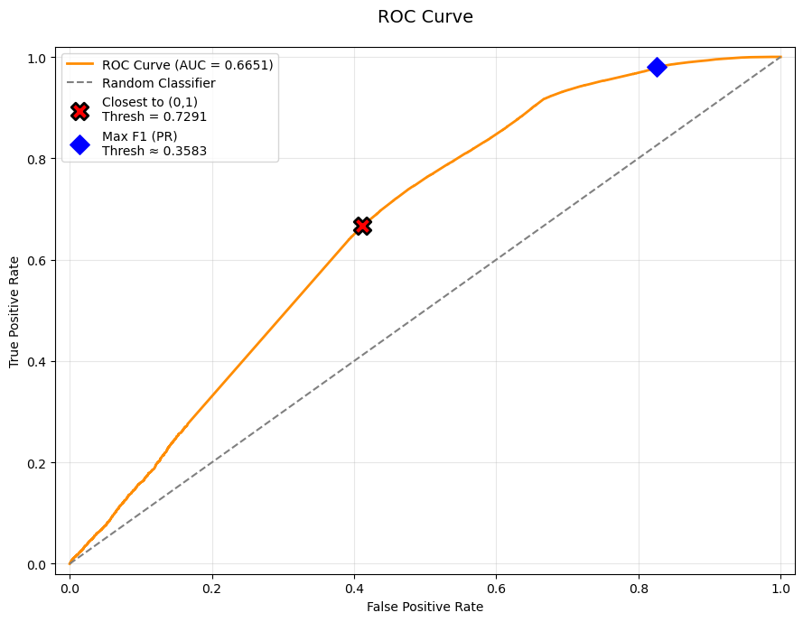

# Project dependencies and imports
import pandas as pd
import numpy as np
import matplotlib.pyplot as plt
import seaborn as sns
# datetime Package
from datetime import datetime
# Serialization Package
import joblibModelling
data = joblib.load("../data/processed/cleaned_data.pkl")groupby_invoice = data.groupby(['Invoice','InvoiceDate', 'Customer ID'])['Total_Price'].sum()
groupby_invoice = groupby_invoice.sort_values(ascending=False).reset_index()
groupby_invoice.head()| Invoice | InvoiceDate | Customer ID | Total_Price | |
|---|---|---|---|---|
| 0 | 493819 | 2010-01-07 12:34:00 | 14156 | 44051.60 |
| 1 | 524181 | 2010-09-27 16:59:00 | 17450 | 33167.80 |
| 2 | 526934 | 2010-10-14 09:46:00 | 18102 | 26007.08 |
| 3 | 515944 | 2010-07-15 15:29:00 | 18102 | 22863.36 |
| 4 | 517731 | 2010-08-01 13:31:00 | 18102 | 21984.00 |
groupby_invoice = groupby_invoice.sort_values(['Customer ID', 'InvoiceDate'])
groupby_invoice['IPT'] = groupby_invoice.groupby('Customer ID')['InvoiceDate'].diff().dt.daysgroupby_invoice.head()| Invoice | InvoiceDate | Customer ID | Total_Price | IPT | |
|---|---|---|---|---|---|
| 17989 | 491725 | 2009-12-14 08:34:00 | 12346 | 45.0 | NaN |
| 18532 | 491742 | 2009-12-14 11:00:00 | 12346 | 22.5 | 0.0 |
| 18533 | 491744 | 2009-12-14 11:02:00 | 12346 | 22.5 | 0.0 |
| 18525 | 492718 | 2009-12-18 10:47:00 | 12346 | 22.5 | 3.0 |
| 19236 | 492722 | 2009-12-18 10:55:00 | 12346 | 1.0 | 0.0 |
cust_ipt = groupby_invoice.groupby('Customer ID')['IPT'].median()
# median IPT overall
median_ipt = cust_ipt.median()median_ipt44.0- The median interpurchase time is 44 days = 6 weeks
- Using this as a reference, define a 12 weeks Observation Window and a 6 week Performance Window for the churn analysis.
- This means that the 12 week window will be used to predict whether the customer will churn in the following 6 week period.
groupby_invoice.head()| Invoice | InvoiceDate | Customer ID | Total_Price | IPT | |
|---|---|---|---|---|---|
| 17989 | 491725 | 2009-12-14 08:34:00 | 12346 | 45.0 | NaN |
| 18532 | 491742 | 2009-12-14 11:00:00 | 12346 | 22.5 | 0.0 |
| 18533 | 491744 | 2009-12-14 11:02:00 | 12346 | 22.5 | 0.0 |
| 18525 | 492718 | 2009-12-18 10:47:00 | 12346 | 22.5 | 3.0 |
| 19236 | 492722 | 2009-12-18 10:55:00 | 12346 | 1.0 | 0.0 |
groupby_invoice.info()<class 'pandas.core.frame.DataFrame'>
Index: 19250 entries, 17989 to 6634
Data columns (total 5 columns):
# Column Non-Null Count Dtype
--- ------ -------------- -----
0 Invoice 19250 non-null object
1 InvoiceDate 19250 non-null datetime64[ns]
2 Customer ID 19250 non-null object
3 Total_Price 19250 non-null float64
4 IPT 14936 non-null float64
dtypes: datetime64[ns](1), float64(2), object(2)
memory usage: 902.3+ KBgroupby_invoice['Week'] = groupby_invoice['InvoiceDate'].dt.isocalendar().week
groupby_invoice['Year'] = groupby_invoice['InvoiceDate'].dt.yeargroupby_invoice.head()| Invoice | InvoiceDate | Customer ID | Total_Price | IPT | Week | Year | |
|---|---|---|---|---|---|---|---|
| 17989 | 491725 | 2009-12-14 08:34:00 | 12346 | 45.0 | NaN | 51 | 2009 |
| 18532 | 491742 | 2009-12-14 11:00:00 | 12346 | 22.5 | 0.0 | 51 | 2009 |
| 18533 | 491744 | 2009-12-14 11:02:00 | 12346 | 22.5 | 0.0 | 51 | 2009 |
| 18525 | 492718 | 2009-12-18 10:47:00 | 12346 | 22.5 | 3.0 | 51 | 2009 |
| 19236 | 492722 | 2009-12-18 10:55:00 | 12346 | 1.0 | 0.0 | 51 | 2009 |
groupby_invoice = groupby_invoice.sort_values(['InvoiceDate', 'Week'])
groupby_invoice.head()| Invoice | InvoiceDate | Customer ID | Total_Price | IPT | Week | Year | |
|---|---|---|---|---|---|---|---|
| 4485 | 489434 | 2009-12-01 07:45:00 | 13085 | 505.30 | NaN | 49 | 2009 |
| 14907 | 489435 | 2009-12-01 07:46:00 | 13085 | 145.80 | 0.0 | 49 | 2009 |
| 3153 | 489436 | 2009-12-01 09:06:00 | 13078 | 630.33 | NaN | 49 | 2009 |
| 9031 | 489437 | 2009-12-01 09:08:00 | 15362 | 310.75 | NaN | 49 | 2009 |
| 365 | 489438 | 2009-12-01 09:24:00 | 18102 | 2286.24 | NaN | 49 | 2009 |
- Our Data is starting from 1 Desember 2012 (week 49) and we need that week to be the first week.
groupby_invoice['WeekIndex'] = (groupby_invoice['Year'] - groupby_invoice['Year'].min()) * 52 + groupby_invoice['Week'] - 48
display(groupby_invoice.head())
# Check the number of week availabel in the data
print("Number of weeks in the Data:", groupby_invoice['WeekIndex'].max())| Invoice | InvoiceDate | Customer ID | Total_Price | IPT | Week | Year | WeekIndex | |
|---|---|---|---|---|---|---|---|---|
| 4485 | 489434 | 2009-12-01 07:45:00 | 13085 | 505.30 | NaN | 49 | 2009 | 1 |
| 14907 | 489435 | 2009-12-01 07:46:00 | 13085 | 145.80 | 0.0 | 49 | 2009 | 1 |
| 3153 | 489436 | 2009-12-01 09:06:00 | 13078 | 630.33 | NaN | 49 | 2009 | 1 |
| 9031 | 489437 | 2009-12-01 09:08:00 | 15362 | 310.75 | NaN | 49 | 2009 | 1 |
| 365 | 489438 | 2009-12-01 09:24:00 | 18102 | 2286.24 | NaN | 49 | 2009 | 1 |
Number of weeks in the Data: 53unique_customers = groupby_invoice['Customer ID'].unique()
# Create weeklylog dataframe consist of zeros
weekly_log = pd.DataFrame(0, index = unique_customers, columns = np.arange(1,54))
weekly_log.head()| 1 | 2 | 3 | 4 | 5 | 6 | 7 | 8 | 9 | 10 | ... | 44 | 45 | 46 | 47 | 48 | 49 | 50 | 51 | 52 | 53 | |
|---|---|---|---|---|---|---|---|---|---|---|---|---|---|---|---|---|---|---|---|---|---|
| 13085 | 0 | 0 | 0 | 0 | 0 | 0 | 0 | 0 | 0 | 0 | ... | 0 | 0 | 0 | 0 | 0 | 0 | 0 | 0 | 0 | 0 |
| 13078 | 0 | 0 | 0 | 0 | 0 | 0 | 0 | 0 | 0 | 0 | ... | 0 | 0 | 0 | 0 | 0 | 0 | 0 | 0 | 0 | 0 |
| 15362 | 0 | 0 | 0 | 0 | 0 | 0 | 0 | 0 | 0 | 0 | ... | 0 | 0 | 0 | 0 | 0 | 0 | 0 | 0 | 0 | 0 |
| 18102 | 0 | 0 | 0 | 0 | 0 | 0 | 0 | 0 | 0 | 0 | ... | 0 | 0 | 0 | 0 | 0 | 0 | 0 | 0 | 0 | 0 |
| 12682 | 0 | 0 | 0 | 0 | 0 | 0 | 0 | 0 | 0 | 0 | ... | 0 | 0 | 0 | 0 | 0 | 0 | 0 | 0 | 0 | 0 |
5 rows × 53 columns
# Fill the data
for cust, group in groupby_invoice.groupby('Customer ID'):
weeks = group['WeekIndex'].unique()
weekly_log.loc[cust, weeks] = 1
#Validation
weekly_log.head()| 1 | 2 | 3 | 4 | 5 | 6 | 7 | 8 | 9 | 10 | ... | 44 | 45 | 46 | 47 | 48 | 49 | 50 | 51 | 52 | 53 | |
|---|---|---|---|---|---|---|---|---|---|---|---|---|---|---|---|---|---|---|---|---|---|
| 13085 | 1 | 0 | 0 | 0 | 0 | 0 | 0 | 1 | 0 | 0 | ... | 0 | 0 | 0 | 0 | 0 | 0 | 0 | 0 | 0 | 0 |
| 13078 | 1 | 1 | 1 | 0 | 1 | 0 | 1 | 0 | 1 | 0 | ... | 0 | 1 | 0 | 1 | 0 | 1 | 1 | 1 | 1 | 1 |
| 15362 | 1 | 0 | 0 | 0 | 0 | 0 | 0 | 0 | 0 | 0 | ... | 0 | 0 | 0 | 0 | 0 | 0 | 0 | 0 | 0 | 0 |
| 18102 | 1 | 1 | 1 | 1 | 1 | 1 | 0 | 0 | 1 | 0 | ... | 0 | 1 | 0 | 0 | 0 | 1 | 1 | 0 | 0 | 1 |
| 12682 | 1 | 1 | 0 | 1 | 0 | 1 | 0 | 0 | 1 | 1 | ... | 0 | 1 | 0 | 0 | 0 | 1 | 1 | 0 | 1 | 1 |
5 rows × 53 columns
weekly_log.shape(4314, 53)def create_weekly_spending_log(df):
df = df.copy()
df["WeekIndex"] = df["InvoiceDate"].dt.isocalendar().week
# pivot -> customers as rows, week as columns, values = total spending
spending_log = df.pivot_table(
index="Customer ID",
columns="Week",
values="Total_Price",
aggfunc="sum",
fill_value=0
)
return spending_logspending_log = create_weekly_spending_log(groupby_invoice)
spending_log.head()| Week | 1 | 2 | 3 | 4 | 5 | 6 | 7 | 8 | 9 | 10 | ... | 43 | 44 | 45 | 46 | 47 | 48 | 49 | 50 | 51 | 52 |
|---|---|---|---|---|---|---|---|---|---|---|---|---|---|---|---|---|---|---|---|---|---|
| Customer ID | |||||||||||||||||||||
| 12346 | 45.0 | 22.5 | 22.5 | 0.0 | 0.0 | 0.0 | 0.0 | 0.0 | 27.05 | 0.0 | ... | 0.00 | 0.0 | 0.0 | 0.0 | 0.0 | 0.00 | 0.00 | 0.0 | 113.5 | 0.0 |
| 12347 | 0.0 | 0.0 | 0.0 | 0.0 | 0.0 | 0.0 | 0.0 | 0.0 | 0.00 | 0.0 | ... | 611.53 | 0.0 | 0.0 | 0.0 | 0.0 | 0.00 | 711.79 | 0.0 | 0.0 | 0.0 |
| 12348 | 0.0 | 0.0 | 0.0 | 0.0 | 0.0 | 0.0 | 0.0 | 0.0 | 0.00 | 0.0 | ... | 0.00 | 0.0 | 0.0 | 0.0 | 0.0 | 0.00 | 0.00 | 0.0 | 0.0 | 0.0 |
| 12349 | 0.0 | 0.0 | 0.0 | 0.0 | 0.0 | 0.0 | 0.0 | 0.0 | 0.00 | 0.0 | ... | 1402.62 | 0.0 | 0.0 | 0.0 | 0.0 | 0.00 | 0.00 | 0.0 | 0.0 | 0.0 |
| 12351 | 0.0 | 0.0 | 0.0 | 0.0 | 0.0 | 0.0 | 0.0 | 0.0 | 0.00 | 0.0 | ... | 0.00 | 0.0 | 0.0 | 0.0 | 0.0 | 300.93 | 0.00 | 0.0 | 0.0 | 0.0 |
5 rows × 52 columns
def recency(row):
"""
Weeks since last purchase inside the window.
If no purchase: return len(row)
"""
if row.sum() == 0:
return len(row)
last_week_idx = row.to_numpy().nonzero()[0].max()
return len(row) - 1 - last_week_idx
def frequency(subset):
"""Total purchases in the window."""
return subset.sum(axis=1)
def tenure(first_purchase_week, ow_end_week):
"""Customer age (in weeks) at the end of the window."""
return ow_end_week - first_purchase_week + 1
def churn_label(log, pw_start, pw_end):
"""
Label churn = 1 if no transaction in PW,
otherwise 0.
"""
pw_subset = log.iloc[:, pw_start:pw_end+1]
churn = (pw_subset.sum(axis=1) == 0).astype(int)
return churn
def compute_window(log, spending_log, ow_start, ow_end, pw_start, pw_end, first_purchase_week=None):
"""
Compute RFM + Monetary + AOV + Tenure + Churn for one window (with gap already handled).
"""
# Observation window subset
log_ow = log.iloc[:, ow_start:ow_end + 1]
spending_ow = spending_log.iloc[:, ow_start:ow_end + 1]
# Frequency & Recency
freq = frequency(log_ow)
rec = log_ow.apply(recency, axis=1)
# Monetary & AOV
monetary_val = spending_ow.sum(axis=1)
aov = monetary_val / freq.replace(0, np.nan)
aov = aov.fillna(0)
# Tenure
if first_purchase_week is not None:
tenure_val = tenure(first_purchase_week, ow_end)
else:
tenure_val = pd.Series([0] * len(log), index=log.index)
# Churn label from prediction window
churn = churn_label(log, pw_start, pw_end)
# Build final dataframe
rfm_df = pd.DataFrame({
'Customer': log.index,
'Window_End': ow_end,
'OW_Start': ow_start,
'OW_End': ow_end,
'PW_Start': pw_start,
'PW_End': pw_end,
'Recency': rec.values,
'Frequency': freq.values,
'Monetary': monetary_val.values,
'AOV': aov.values,
'Tenure': tenure_val.values,
'Churn': churn.values,
})
return rfm_df
def sliding_rfm_churn(log, spending_log, ow_weeks=12, pw_weeks=6, gap_weeks=1, first_purchase_week=None):
"""
Generate RFM dataset with sliding windows + GAP to prevent data leakage.
Parameters:
- ow_weeks: length of observation window (e.g., 12 weeks)
- pw_weeks: length of prediction window (e.g., 6 weeks)
- gap_weeks: buffer weeks between OW and PW (e.g., 1) → CRUCIAL for no leakage
- first_purchase_week: optional Series (index=customer, value=first week of purchase)
Example:
OW: week 10–21 (12 weeks)
Gap: week 22
PW: week 23–28 (6 weeks) → label based on activity here
"""
total_weeks = log.shape[1]
records = []
# Last possible OW end: must leave space for gap + full prediction window
max_ow_end = total_weeks - gap_weeks - pw_weeks
for ow_end in range(ow_weeks - 1, max_ow_end + 1):
ow_start = ow_end - ow_weeks + 1
pw_start = ow_end + gap_weeks
pw_end = pw_start + pw_weeks - 1
# Safety check (should not happen if max_ow_end correct)
if pw_end >= total_weeks:
continue
window_df = compute_window(
log=log,
spending_log=spending_log,
ow_start=ow_start,
ow_end=ow_end,
pw_start=pw_start,
pw_end=pw_end,
first_purchase_week=first_purchase_week
)
records.append(window_df)
if not records:
raise ValueError("No valid windows generated. Check data length and parameters.")
return pd.concat(records, ignore_index=True)rfm_churn_all = sliding_rfm_churn(weekly_log, spending_log, ow_weeks=12, pw_weeks=6)
rfm_churn_all.head()| Customer | Window_End | OW_Start | OW_End | PW_Start | PW_End | Recency | Frequency | Monetary | AOV | Tenure | Churn | |
|---|---|---|---|---|---|---|---|---|---|---|---|---|
| 0 | 13085 | 11 | 0 | 11 | 12 | 17 | 4 | 2 | 117.05 | 29.2625 | 0 | 1 |
| 1 | 13078 | 11 | 0 | 11 | 12 | 17 | 1 | 7 | 0.00 | 0.0000 | 0 | 0 |
| 2 | 15362 | 11 | 0 | 11 | 12 | 17 | 11 | 1 | 0.00 | 0.0000 | 0 | 1 |
| 3 | 18102 | 11 | 0 | 11 | 12 | 17 | 0 | 9 | 0.00 | 0.0000 | 0 | 0 |
| 4 | 12682 | 11 | 0 | 11 | 12 | 17 | 0 | 7 | 0.00 | 0.0000 | 0 | 0 |
rfm_churn_all['Churn'].value_counts(normalize=True)Churn
1 0.675688
0 0.324312
Name: proportion, dtype: float64- We don’t need to use resampling techniques because the proportions aren’t severely imbalanced.
- We need to split the data to test and train set.
rfm_churn_test = rfm_churn_all[rfm_churn_all['Window_End']> 35]
rfm_churn_train = rfm_churn_all[~(rfm_churn_all['Window_End']> 35)]from sklearn.linear_model import LogisticRegression
from sklearn.metrics import accuracy_score, precision_score, recall_score, f1_score, roc_auc_score, confusion_matrix, roc_curve, precision_recall_curve
X_train = rfm_churn_train[['Frequency','Recency','Monetary','Tenure']] # fitur
y_train = rfm_churn_train['Churn'] # target
model = LogisticRegression()
model.fit(X_train, y_train)LogisticRegression()In a Jupyter environment, please rerun this cell to show the HTML representation or trust the notebook.
On GitHub, the HTML representation is unable to render, please try loading this page with nbviewer.org.
Parameters
| penalty | 'l2' | |
| dual | False | |
| tol | 0.0001 | |
| C | 1.0 | |
| fit_intercept | True | |
| intercept_scaling | 1 | |
| class_weight | None | |
| random_state | None | |
| solver | 'lbfgs' | |
| max_iter | 100 | |
| multi_class | 'deprecated' | |
| verbose | 0 | |
| warm_start | False | |
| n_jobs | None | |
| l1_ratio | None |
def eval_metrics(y_true, y_pred, y_prob):
acc = accuracy_score(y_true, y_pred)
prec = precision_score(y_true, y_pred)
rec = recall_score(y_true, y_pred)
f1 = f1_score(y_true, y_pred)
auc_score = roc_auc_score(y_true, y_prob)
cm = confusion_matrix(y_true, y_pred)
print("Accuracy :", acc)
print("Precision :", prec)
print("Recall :", rec)
print("F1-score :", f1)
print("ROC-AUC :", auc_score)
# --- Confusion Matrix ---
sns.heatmap(cm, annot=True, fmt="d", cmap="Blues")
plt.title("Confusion Matrix")
plt.xlabel("Predicted Label")
plt.ylabel("True Label")
plt.gca().set_xticklabels(["Not Churn (0)", "Churn (1)"])
plt.gca().set_yticklabels(["Not Churn (0)", "Churn (1)"])
plt.show()y_pred = model.predict(X_train)
y_prob = model.predict_proba(X_train)[:,1]
eval_metrics(y_train, y_pred, y_prob)Accuracy : 0.7492350486787205
Precision : 0.7501373530322555
Recall : 0.9736535020615616
F1-score : 0.8474042644428521
ROC-AUC : 0.6650614320387536
def optimal_threshold(y_true, y_prob, show_plot=True):
y_true = np.array(y_true)
y_prob = np.array(y_prob)
# ROC Curve
fpr, tpr, roc_thresh = roc_curve(y_true, y_prob)
auc = roc_auc_score(y_true, y_prob)
# Precision-Recall Curve + Max F1
precision, recall, pr_thresh = precision_recall_curve(y_true, y_prob)
f1_scores = 2 * recall * precision / (recall + precision + 1e-12)
best_f1_idx = np.argmax(f1_scores)
thresh_f1 = pr_thresh[best_f1_idx]
best_f1 = f1_scores[best_f1_idx]
# Closest to top-left corner (0,1)
distance = np.sqrt(fpr**2 + (1 - tpr)**2)
best_corner_idx = np.argmin(distance)
thresh_corner = roc_thresh[best_corner_idx]
dist_min = distance[best_corner_idx]
# Print all the result
print(f"ROC AUC Score: {auc}")
print(f"Best Threshold (Max F1) {thresh_f1}")
print(f"Best Threshold (Closest to (0,1)): {thresh_corner}")
# Plotting
fig, ax = plt.subplots(1, 1, figsize=(9, 7))
ax.plot(fpr, tpr, label=f'ROC Curve (AUC = {auc:.4f})', linewidth=2, color='darkorange')
ax.plot([0, 1], [0, 1], '--', color='gray', label='Random Classifier')
# Closest to (0,1)
ax.scatter(fpr[best_corner_idx], tpr[best_corner_idx],
color='red', s=180, zorder=5, marker='X', edgecolors='black', linewidth=2,
label=f'Closest to (0,1)\nThresh = {thresh_corner:.4f}')
# Max F1 point
idx_f1_roc = np.argmin(np.abs(roc_thresh - thresh_f1))
ax.scatter(fpr[idx_f1_roc], tpr[idx_f1_roc],
color='blue', s=120, zorder=5, marker='D',
label=f'Max F1 (PR)\nThresh ≈ {thresh_f1:.4f}')
ax.set_xlabel('False Positive Rate')
ax.set_ylabel('True Positive Rate')
ax.set_title('ROC Curve', fontsize=14, pad=20)
ax.legend()
ax.grid(True, alpha=0.3)
ax.set_xlim(-0.02, 1.02)
ax.set_ylim(-0.02, 1.02)
plt.tight_layout()
plt.show()
return thresh_f1, thresh_cornerthresh_f1, thresh_corner = optimal_threshold(y_train, y_prob)ROC AUC Score: 0.6650614320387536
Best Threshold (Max F1) 0.35834032378677777
Best Threshold (Closest to (0,1)): 0.7290878242072304
- Let’s see how each threshold perform on the training data
y_pred_f1 = (y_prob >= thresh_f1).astype(int)
eval_metrics(y_train, y_pred_f1, y_prob)Accuracy : 0.750477515067223
Precision : 0.7486999158040711
Recall : 0.9800197080102689
F1-score : 0.8488833732964213
ROC-AUC : 0.6650614320387536
y_pred_corner = (y_prob >= thresh_corner).astype(int)
eval_metrics(y_train, y_pred_corner, y_prob)Accuracy : 0.6441910060268892
Precision : 0.8025892494612237
Recall : 0.666351165625081
F1-score : 0.7281524511192973
ROC-AUC : 0.6650614320387536
- The threshold obtained by maximizing F1 yields a noticeably higher recall compared to the threshold from the closest-to-(0,1) method.
- Given that catching churned customers is more important than keeping the prediction list perfectly clean (precision), we should go with the Max F1 threshold
# Testing it on the test set
best_threshold = thresh_f1
X_test = rfm_churn_test[['Frequency','Recency','Monetary','Tenure']]
y_test = rfm_churn_test['Churn']
y_prob_test = model.predict_proba(X_test)[:,1]
y_pred_test = (y_prob_test >= best_threshold).astype(int)
eval_metrics(y_test, y_pred_test, y_prob_test)Accuracy : 0.6257849707084756
Precision : 0.6140908368704179
Recall : 0.9728165114523031
F1-score : 0.7529081093115155
ROC-AUC : 0.5876311966524141